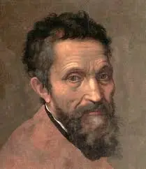
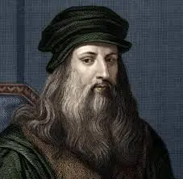
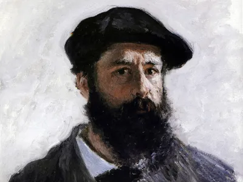
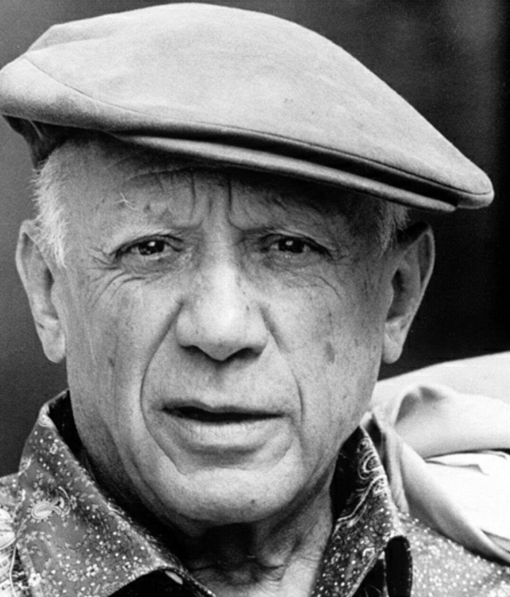
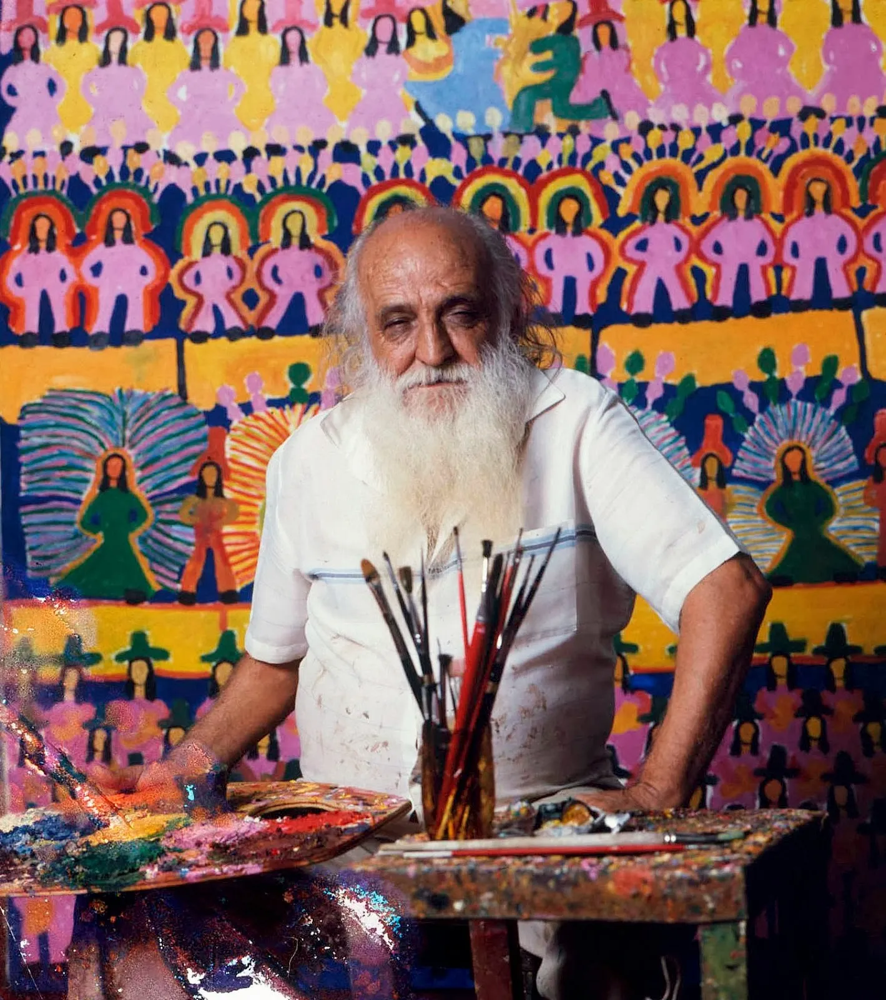

Michelangelo Buonarroti
Michelangelo di Lodovico Buonarroti Simoni (Caprese, 6 de março de 1475 — Roma, 18 de fevereiro de 1564), mais conhecido simplesmente como Michelangelo ou Miguel Ângelo, foi um pintor, escultor, poeta, anatomista e arquiteto italiano, considerado um dos maiores criadores da história da arte do ocidente.

Vincent Van Gogh
Vincent Willem van Gogh foi um pintor pós-impressionista neerlandês. Considerado uma das figuras mais famosas e influentes da história da arte ocidental, criou mais de dois mil trabalhos ao longo de pouco mais de uma década, incluindo 860 pinturas a óleo, grande parte das quais, concluídas nos seus últimos dois anos de vida.

Leonardo da Vinci
Leonardo di Ser Piero da Vinci, ou simplesmente Leonardo da Vinci, foi um polímata nascido na atual Itália,uma das figuras mais importantes do Alto Renascimento, que se destacou como cientista, matemático, engenheiro, inventor, anatomista, pintor, escultor, arquiteto, botânico, poeta e músico.

Claude Monet
Oscar-Claude Monet (Paris, 14 de novembro de 1840 — Giverny, 5 de dezembro de 1926) foi um pintor francês e o mais célebre entre os pintores impressionistas.

Pablo Picasso
Pablo Ruiz Picasso (Málaga, 25 de outubro de 1881 – Mougins, 8 de abril de 1973) foi um pintor, escultor, ceramista, cenógrafo, poeta e dramaturgo espanhol, considerado um dos mais importantes e populares pintores do século XX.

Antônio Poteiro
Antônio Batista de Sousa, mais conhecido como Antônio Poteiro,(Província do Minho, Aldeia de Santa Cristina da Pousa (Braga), antiga província situada ao norte de Portugal, 10 de outubro de 1925 - Goiânia, Brasil, 8 de junho de 2010), foi um escultor português, ceramista e pintor, filho do ceramista português Américo Batista de Souzaque. Foi para o Brasil com um ano de idade, morou em São Paulo, Minas Gerais e radicou-se em Goiânia. É considerado um dos mestres da pintura primitiva brasileira.